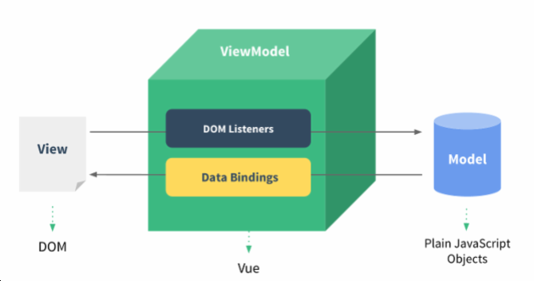
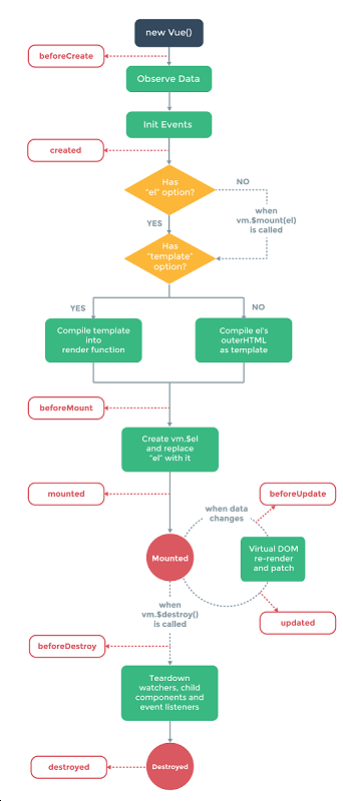

vuejs简单入门 1.VueJS 概述与快速入门 1.1 VueJS介绍 1.2 MVVM模式 1.3 VueJS 快速入门1.4 插值表达式 2.VueJS 常用系统指令 2.1 v-on 2.1.1 v-on:click 2.1.4 事件修饰符 2.1.5 按键修饰符 2.3 v-bind 2.5 v-for 2.6 v-if与v-show 3.VueJS生命周期 4.VueJS ajax 4.1 vue-resource 4.2 axios 4.2.1 引入axios 4.2.2 get4.2.3 post请求 5. 综合案例 5.1 案例需求 5.2 数据库设计与表结构 5.3 服务器端 5.3.1 配置文件 5.3.2 Controller 5.4.2 user.js页面
Vue.js是一个构建数据驱动的 web 界面的渐进式框架。Vue.js 的目标是通过尽可能简单的 API 实现响应的数据绑定和组合的视图组件。它不仅易于上手，还便于与第三方库或既有项目整合。 官网:https://cn.vuejs.org/
MVVM是Model-View-ViewModel的简写。它本质上就是MVC 的改进版。MVVM 就是将其中的View 的状态和行为 抽象化，让我们将视图 UI 和业务逻辑分开 MVVM模式和MVC模式一样，主要目的是分离视图（View）和模型（Model） Vue.js 是一个提供了 MVVM 风格的双向数据绑定的 Javascript 库，专注于View 层。它的核心是 MVVM 中的 VM， 也就是 ViewModel。 ViewModel负责连接 View 和 Model，保证视图和数据的一致性，这种轻量级的架构让前端开发更加高效、便捷 
xxxxxxxxxx <html> <head> <meta charset="utf-8" /> <title>快速入门</title> <script src="js/vuejs-2.5.16.js"></script> </head> <body> <div id="app"> {{message}} </div> <script> new Vue({ el:'#app', //表示当前vue对象接管了div区域 data:{ message:'hello world' //注意不要写分号结尾 } }); </script> </body> </html> 数据绑定最常见的形式就是使用“Mustache”语法 (双大括号) 的文本插值，Mustache标签将会被替代为对应数据对象上属性的值。无论何时，绑定的数据对象上属性发生了改变，插值处的内容都会更新。 Vue.js 都提供了完全的 JavaScript 表达式支持。
xxxxxxxxxx{{ number + 1 }} {{ ok ? 'YES' : 'NO' }} 这些表达式会在所属 Vue 实例的数据作用域下作为 JavaScript 被解析。有个限制就是，每个绑定都只能包含单个 表达式，所以下面的例子都不会生效。
xxxxxxxxxx<!-- 这是语句，不是表达式 --> {{ var a = 1 }} <!-- 流控制也不会生效，请使用三元表达式 --> {{ if (ok) { return message } }} 可以用 v-on 指令监听 DOM 事件，并在触发时运行一些 JavaScript 代码
xxxxxxxxxx <html> <head> <meta charset="utf-8" /> <title>事件处理 v-on示例1</title> <script src="js/vuejs-2.5.16.js"></script> </head> <body> <div id="app"> {{message}} <button v-on:click="fun1('good')">点击改变</button> </div> <script> new Vue({ el:'#app', //表示当前vue对象接管了div区域 data:{ message:'hello world' //注意不要写分号结尾 }, methods:{ fun1:function(msg){ this.message=msg; } } }); </script> </body> </html> xxxxxxxxxx <html> <head> <meta charset="utf-8" /> <title>事件处理 v-on示例2</title> <script src="js/vuejs-2.5.16.js"></script> </head> <body> <div id="app"> <input type="text"v-on:keydown="fun2('good',$event)"> </div> <script> new Vue({ el:'#app', //表示当前vue对象接管了div区域 methods:{ fun2:function(msg,event){ if(! ((event.keyCode>=48&&event.keyCode<=57)||event.keyCode==8||event.keyCode==46)){ event.preventDefault(); } } } }); </script> </body> </html> <html> <head> <meta charset="utf-8" /> <title>事件处理 v-on示例3</title> <script src="js/vuejs-2.5.16.js"></script> </head> <body> <div id="app"> <div v-on:mouseover="fun1" id="div"> <textarea v-on:mouseover="fun2($event)">这是一个文件域</textarea> </div> </div> <script> new Vue({ el:'#app', //表示当前vue对象接管了div区域 methods:{ fun1:function(){ alert("div"); }, fun2:function(event){ alert("textarea"); event.stopPropagation();//阻止冒泡 } } }); </script> </body> </html> Vue.js 为 v-on 提供了事件修饰符来处理 DOM 事件细节，如：event.preventDefault() 或 event.stopPropagation()。 Vue.js通过由点(.)表示的指令后缀来调用修饰符。 .stop .prevent .capture .self .once
xxxxxxxxxx <html> <head> <meta charset="utf-8" /> <title>v-on 事件修饰符</title> <script src="js/vuejs-2.5.16.js"></script> </head> <body> <div id="app"> <form @submit.prevent action="http://www.itcast.cn" method="get"> <input type="submit" value="提交"/> </form> <div @click="fun1"> <a @click.stop href="http://www.itcast.cn">itcast</a> </div> </div> <script> new Vue({ el:'#app', //表示当前vue对象接管了div区域 methods:{ fun1:function(){ alert("hello itcast"); } } }); </script> </body> </html>Vue 允许为 v-on 在监听键盘事件时添加按键修饰符 全部的按键别名： .enter .tab .delete (捕获 "删除" 和 "退格" 键) .esc .space .up .down .left .right .ctrl .alt .shift .meta
xxxxxxxxxx <html> <head> <meta charset="utf-8" /> <title>v-on 按钮修饰符</title> <script src="js/vuejs-2.5.16.js"></script> </head> <body> <div id="app"> <input type="text" v-on:keyup.enter="fun1"> </div> <script> new Vue({ el:'#app', //表示当前vue对象接管了div区域 methods:{ fun1:function(){ alert("你按了回车"); } } }); </script> </body> </html> xxxxxxxxxx<p><!-- Alt + C --> <input @keyup.alt.67="clear"> <!-- Ctrl + Click --> <div @click.ctrl="doSomething">Do something</div> v-on简写方式
xxxxxxxxxx<!-- 完整语法 --> <a v-on:click="doSomething">...</a> <!-- 缩写 --> <a @click="doSomething">...</a> xxxxxxxxxx <html> <head> <meta charset="utf-8" /> <title>v-html与v-text</title> <script src="js/vuejs-2.5.16.js"></script> </head> <body> <div id="app"> <div v-text="message"></div> <div v-html="message"></div> </div> <script> new Vue({ el:'#app', //表示当前vue对象接管了div区域 data:{ message:"<h1>传智黑马</h1>" } }); </script> </body> </html> 插值语法不能作用在 HTML 特性上，遇到这种情况应该使用 v-bind指令
xxxxxxxxxx <html> <head> <meta charset="utf-8" /> <title>v-bind</title> <script src="js/vuejs-2.5.16.js"></script> </head> <body> <div id="app"> <font size="5" v-bind:color="ys1">传智播客</font> <font size="5" :color="ys2">黑马程序员</font> <hr> <a v-bind={href:"http://www.itcast.cn/index/"+id}>itcast</a> </div> <script> new Vue({ el:'#app', //表示当前vue对象接管了div区域 data:{ ys1:"red", ys2:"green", id:1 } }); </script> </body> </html> v-bind简写方式
xxxxxxxxxx<!-- 完整语法 --> <a v-bind:href="url">...</a> <!-- 缩写 --> <a :href="url">...</a> 2.4 v-model <html> <head> <meta charset="utf-8" /> <title>v-model</title> <script src="js/vuejs-2.5.16.js"></script> </head> <body> <div id="app"> 姓名:<input type="text" id="username" v-model="user.username"><br> 密码:<input type="password" id="password" v-model="user.password"><br> <input type="button" @click="fun" value="获取"> </div> <script> new Vue({ el:'#app', //表示当前vue对象接管了div区域 data:{ user:{username:"",password:""} }, methods:{ fun:function(){ alert(this.user.username+" "+this.user.password); this.user.username="tom"; this.user.password="11111111"; } } }); </script> </body> </html> 操作array
xxxxxxxxxx <html> <head> <meta charset="utf-8" /> <title>v-model</title> <script src="js/vuejs-2.5.16.js"></script> </head> <body> <div id="app"> <ul> <li v-for="(item,index) in list">{{item+" "+index}}</li> </ul> </div> <script> new Vue({ el:'#app', //表示当前vue对象接管了div区域 data:{ list:[1,2,3,4,5,6] } }); </script> </body> </html> 操作对象
xxxxxxxxxx <html> <head> <meta charset="utf-8" /> <title>v-for示例1</title> <script src="js/vuejs-2.5.16.js"></script> </head> <body> <div id="app"> <ul> <li v-for="(value,key) in product">{{key}}--{{value}}</li> </ul> </div> <script> new Vue({ el:'#app', //表示当前vue对象接管了div区域 data:{ product:{id:1,pname:"电视机",price:6000} } }); </script> </body> </html> 操作对象数组
xxxxxxxxxx <html> <head> <meta charset="utf-8" /> <title>v-for示例1</title> <script src="js/vuejs-2.5.16.js"></script> </head> <body> <div id="app"> <table border="1"> <tr> <td>序号</td> <td>名称</td> <td>价格</td> </tr> <tr v-for="p in products"> <td> {{p.id}} </td> <td> {{p.pname}} </td> <td> {{p.price}} </td> </tr> </table> </div> <script> new Vue({ el:'#app', //表示当前vue对象接管了div区域 data:{ products:[{id:1,pname:"电视机",price:6000},{id:2,pname:"电冰箱",price:8000}, {id:3,pname:"电风扇",price:600}] } }); </script> </body> </html> v-if是根据表达式的值来决定是否渲染元素 v-show是根据表达式的值来切换元素的display css属性
xxxxxxxxxx <html> <head> <meta charset="utf-8" /> <title>v-if与v-show</title> <script src="js/vuejs-2.5.16.js"></script> </head> <body> <div id="app"> <span v-if="flag">传智播客</span> <span v-show="flag">itcast</span> <button @click="toggle">切换</button> </div> <script> new Vue({ el:'#app', //表示当前vue对象接管了div区域 data:{ flag:false }, methods:{ toggle:function(){ this.flag=!this.flag; } } }); </script> </body> </html> 每个 Vue 实例在被创建之前都要经过一系列的初始化过程.  vue在生命周期中有这些状态， beforeCreate,created,beforeMount,mounted,beforeUpdate,updated,beforeDestroy,destroyed。Vue在实例化的过程中，会调用这些生命周期的钩子，给我们提供了执行自定义逻辑的机会。那么，在这些vue钩子中，vue实例到底执行了那些操作，我们先看下面执行的例子
xxxxxxxxxx <html> <head> <meta charset="utf-8" /> <title>生命周期</title> <script src="js/vuejs-2.5.16.js"></script> </head> <body> <div id="app"> {{message}} </div> <script> var vm = new Vue({ el: "#app", data: { message: 'hello world' }, beforeCreate: function() { console.log(this); showData('创建vue实例前', this); }, created: function() { showData('创建vue实例后', this); }, beforeMount: function() { showData('挂载到dom前', this); }, mounted: function() { showData('挂载到dom后', this); }, beforeUpdate: function() { showData('数据变化更新前', this); }, updated: function() { showData('数据变化更新后', this); }, beforeDestroy: function() { vm.test = "3333"; showData('vue实例销毁前', this); }, destroyed: function() { showData('vue实例销毁后', this); } }); function realDom() { console.log('真实dom结构：' + document.getElementById('app').innerHTML); } function showData(process, obj) { console.log(process); console.log('data 数据：' + obj.message) console.log('挂载的对象：') console.log(obj.$el) realDom(); console.log('------------------') console.log('------------------') } vm.message="good..."; vm.$destroy(); </script> </body> </html> vue对象初始化过程中，会执行到beforeCreate,created,beforeMount,mounted 这几个钩子的内容 beforeCreate ：数据还没有监听，没有绑定到vue对象实例，同时也没有挂载对象 created ：数据已经绑定到了对象实例，但是还没有挂载对象 beforeMount: 模板已经编译好了，根据数据和模板已经生成了对应的元素对象，将数据对象关联到了对象的el属性，el属性是一个HTMLElement对象，也就是这个阶段，vue实例通过原生的createElement等方法来创建这个html片段，准备注入到我们vue实例指明的el属性所对应的挂载点 mounted:将el的内容挂载到了el，相当于我们在jquery执行了(el).html(el),生成页面上真正的dom，上面我们就会发现dom的元素和我们el的元素是一致的。在此之后，我们能够用方法来获取到el元素下的dom对象，并进 行各种操作 当我们的data发生改变时，会调用beforeUpdate和updated方 beforeUpdate ：数据更新到dom之前，我们可以看到$el对象已经修改，但是我们页面上dom的数据还 没有发生改变 updated: dom结构会通过虚拟dom的原则，找到需要更新页面dom结构的最小路径，将改变更新到 dom上面，完成更新 beforeDestroy,destroed :实例的销毁，vue实例还是存在的，只是解绑了事件的监听还有watcher对象数据与view的绑定，即数据驱动
vue-resource是Vue.js的插件提供了使用XMLHttpRequest或JSONP进行Web请求和处理响应的服务。 当vue更新到2.0之后，作者就宣告不再对vue-resource更新，而是推荐的axios，在这里大家了解一下vue-resource就可以。 vue-resource的github: https://github.com/pagekit/vue-resource
Axios 是一个基于 promise 的 HTTP 库，可以用在浏览器和 node.js 中 axios的github:https://github.com/axios/axios
首先就是引入axios,如果你使用es6，只需要安装axios模块之后
xxxxxxxxxximport axios from 'axios'; //安装方法 npm install axios //或 bower install axios 当然也可以用script引入
xxxxxxxxxx<script src="https://unpkg.com/axios/dist/axios.min.js"></script> xxxxxxxxxx//通过给定的ID来发送请求 axios.get('/user?ID=12345') .then(function(response){ console.log(response); }) .catch(function(err){ console.log(err); }); //以上请求也可以通过这种方式来发送 axios.get('/user',{ params:{ ID:12345 } }) .then(function(response){ console.log(response); }) .catch(function(err){ console.log(err); }); xxxxxxxxxxaxios.post('/user',{ firstName:'Fred', lastName:'Flintstone' }) .then(function(res){ console.log(res); }) .catch(function(err){ console.log(err); }); 为方便起见，为所有支持的请求方法提供了别名
axios.request(config)
axios.get(url[, config])
axios.delete(url[, config])
axios.head(url[, config])
axios.post(url[, data[, config]])
axios.put(url[, data[, config]])
axios.patch(url[, data[, config]])
完成用户的查询与修改操作
xxxxxxxxxxCREATE DATABASE vuejsdemo; USE vuejsdemo; CREATE TABLE USER( id INT PRIMARY KEY AUTO_INCREMENT, age INT, username VARCHAR(20), PASSWORD VARCHAR(50), email VARCHAR(50), sex VARCHAR(20) ) User类
xxxxxxxxxxpublic class User { private Integer id; private String username; private String password; private String sex; private int age; private String email; 省略getter/setter ｝pom.xml
xxxxxxxxxx <project xmlns="http://maven.apache.org/POM/4.0.0" xmlns:xsi="http://www.w3.org/2001/XMLSchema- instance" xsi:schemaLocation="http://maven.apache.org/POM/4.0.0 http://maven.apache.org/xsd/maven-4.0.0.xsd"> <modelVersion>4.0.0</modelVersion> <groupId>com.itheima.vuejsDemo</groupId> <artifactId>vuejsDemo</artifactId> <version>1.0-SNAPSHOT</version> <packaging>war</packaging> <name>vuejsDemo Maven Webapp</name> <!-- FIXME change it to the project's website --> <url>http://www.example.com</url> <properties> <project.build.sourceEncoding>UTF-8</project.build.sourceEncoding> <maven.compiler.source>1.8</maven.compiler.source> <maven.compiler.target>1.8</maven.compiler.target> <spring.version>5.0.2.RELEASE</spring.version> <slf4j.version>1.6.6</slf4j.version> <log4j.version>1.2.12</log4j.version> <mybatis.version>3.4.5</mybatis.version> </properties> <dependencies> <!-- spring --> <dependency> <groupId>org.aspectj</groupId> <artifactId>aspectjweaver</artifactId> <version>1.6.8</version> </dependency> <dependency> <groupId>org.springframework</groupId> <artifactId>spring-aop</artifactId> <version>${spring.version}</version> </dependency> <dependency> <groupId>org.springframework</groupId> <artifactId>spring-context</artifactId> <version>${spring.version}</version> </dependency> <dependency> <groupId>org.springframework</groupId> <artifactId>spring-context-support</artifactId> <version>${spring.version}</version> </dependency> <dependency> <groupId>org.springframework</groupId> <artifactId>spring-web</artifactId> <version>${spring.version}</version> </dependency> <dependency> <groupId>org.springframework</groupId> <artifactId>spring-orm</artifactId> <version>${spring.version}</version> </dependency> <dependency> <groupId>org.springframework</groupId> <artifactId>spring-beans</artifactId> <version>${spring.version}</version> </dependency> <dependency> <groupId>org.springframework</groupId> <artifactId>spring-core</artifactId> <version>${spring.version}</version> </dependency> <dependency> <groupId>org.springframework</groupId> <artifactId>spring-test</artifactId> <version>${spring.version}</version> </dependency> <dependency> <groupId>org.springframework</groupId> <artifactId>spring-webmvc</artifactId> <version>${spring.version}</version> </dependency> <dependency> <groupId>org.springframework</groupId> <artifactId>spring-tx</artifactId> <version>${spring.version}</version> </dependency> <dependency> <groupId>junit</groupId> <artifactId>junit</artifactId> <version>4.12</version> <scope>test</scope> </dependency> <dependency> <groupId>javax.servlet</groupId> <artifactId>javax.servlet-api</artifactId> <version>3.1.0</version> <scope>provided</scope> </dependency> <dependency> <groupId>javax.servlet.jsp</groupId> <artifactId>jsp-api</artifactId> <version>2.0</version> <scope>provided</scope> </dependency> <dependency> <groupId>jstl</groupId> <artifactId>jstl</artifactId> <version>1.2</version> </dependency> <!-- log start --> <dependency> <groupId>log4j</groupId> <artifactId>log4j</artifactId> <version>${log4j.version}</version> </dependency> <dependency> <groupId>org.slf4j</groupId> <artifactId>slf4j-api</artifactId> <version>${slf4j.version}</version> </dependency> <dependency> <groupId>org.slf4j</groupId> <artifactId>slf4j-log4j12</artifactId> <version>${slf4j.version}</version> </dependency> <!-- log end --> <dependency> <groupId>org.mybatis</groupId> <artifactId>mybatis</artifactId> <version>${mybatis.version}</version> </dependency> <dependency> <groupId>org.mybatis</groupId> <artifactId>mybatis-spring</artifactId> <version>1.3.0</version> </dependency> <dependency> <groupId>c3p0</groupId> <artifactId>c3p0</artifactId> <version>0.9.1.2</version> <type>jar</type> <scope>compile</scope> </dependency> <dependency> <groupId>com.github.pagehelper</groupId> <artifactId>pagehelper</artifactId> <version>5.1.2</version> </dependency> <dependency> <groupId>mysql</groupId> <artifactId>mysql-connector-java</artifactId> <version>5.1.5</version> </dependency> <dependency> <groupId>com.fasterxml.jackson.core</groupId> <artifactId>jackson-core</artifactId> <version>2.9.5</version> </dependency> <dependency> <groupId>com.fasterxml.jackson.core</groupId> <artifactId>jackson-databind</artifactId> <version>2.9.5</version> </dependency> </dependencies> <build> <finalName>vuejsDemo</finalName> <pluginManagement><!-- lock down plugins versions to avoid using Maven defaults (may be moved to parent pom) --> <plugins> <plugin> <artifactId>maven-clean-plugin</artifactId> <version>3.0.0</version> </plugin> <!-- see http://maven.apache.org/ref/current/maven-core/default- bindings.html#Plugin_bindings_for_war_packaging --> <plugin> <artifactId>maven-resources-plugin</artifactId> <version>3.0.2</version> </plugin> <plugin> <artifactId>maven-compiler-plugin</artifactId> <version>3.7.0</version> </plugin> <plugin> <artifactId>maven-surefire-plugin</artifactId> <version>2.20.1</version> </plugin> <plugin> <artifactId>maven-war-plugin</artifactId> <version>3.2.0</version> </plugin> <plugin> <artifactId>maven-install-plugin</artifactId> <version>2.5.2</version> </plugin> <plugin> <artifactId>maven-deploy-plugin</artifactId> <version>2.8.2</version> </plugin> </plugins> </pluginManagement> <plugins> <plugin> <groupId>org.apache.tomcat.maven</groupId> <artifactId>tomcat7-maven-plugin</artifactId> <version>2.2</version> </plugin> </plugins> </build> </project> web.mxl
xxxxxxxxxx <web-app xmlns="http://xmlns.jcp.org/xml/ns/javaee" xmlns:xsi="http://www.w3.org/2001/XMLSchema-instance" xsi:schemaLocation="http://xmlns.jcp.org/xml/ns/javaee http://xmlns.jcp.org/xml/ns/javaee/web-app_3_1.xsd" version="3.1" metadata-complete="true"> <!-- 手动指定 spring 配置文件位置 --> <context-param> <param-name>contextConfigLocation</param-name> <param-value>classpath:applicationContext.xml</param-value> </context-param> <!-- 配置 spring 提供的监听器，用于启动服务时加载容器 。 该间监听器只能加载 WEB-INF 目录中名称为 applicationContext.xml 的配置文件 --> <listener> <listener-class> org.springframework.web.context.ContextLoaderListener </listener-class> </listener> <!-- 配置 spring mvc 的核心控制器 --> <servlet> <servlet-name>springmvcDispatcherServlet</servlet-name> <servlet-class>org.springframework.web.servlet.DispatcherServlet</servlet-class> <!-- 配置初始化参数，用于读取 springmvc 的配置文件 --> <init-param> <param-name>contextConfigLocation</param-name> <param-value>classpath:springmvc.xml</param-value> </init-param> <!-- 配置 servlet 的对象的创建时间点：应用加载时创建。取值只能是非 0 正整数，表示启动顺 序 --> <load-on-startup>1</load-on-startup> </servlet> <servlet-mapping> <servlet-name>springmvcDispatcherServlet</servlet-name> <url-pattern>*.do</url-pattern> </servlet-mapping> <!-- 配置 springMVC 编码过滤器 --> <filter> <filter-name>CharacterEncodingFilter</filter-name> <filter-class>org.springframework.web.filter.CharacterEncodingFilter</filter-class> <!-- 设置过滤器中的属性值 --> <init-param> <param-name>encoding</param-name> <param-value>UTF-8</param-value> </init-param> <!-- 启动过滤器 --> <init-param> <param-name>forceEncoding</param-name> <param-value>true</param-value> </init-param> </filter> <!-- 过滤所有请求 --> <filter-mapping> <filter-name>CharacterEncodingFilter</filter-name> <url-pattern>/*</url-pattern> </filter-mapping> <welcome-file-list> <welcome-file>index.html</welcome-file> <welcome-file>index.htm</welcome-file> <welcome-file>index.jsp</welcome-file> <welcome-file>default.html</welcome-file> <welcome-file>default.htm</welcome-file> <welcome-file>default.jsp</welcome-file> </welcome-file-list> </web-app>springmvc.xml
xxxxxxxxxx <beans xmlns="http://www.springframework.org/schema/beans" xmlns:mvc="http://www.springframework.org/schema/mvc" xmlns:context="http://www.springframework.org/schema/context" xmlns:xsi="http://www.w3.org/2001/XMLSchema-instance" xsi:schemaLocation="http://www.springframework.org/schema/beans http://www.springframework.org/schema/beans/spring-beans.xsd http://www.springframework.org/schema/mvc http://www.springframework.org/schema/mvc/spring-mvc.xsd http://www.springframework.org/schema/context http://www.springframework.org/schema/context/spring-context.xsd"> <!-- 配置创建 spring 容器要扫描的包 --> <context:component-scan base-package="com.itheima"> <!-- 制定扫包规则 ,只扫描使用@Controller 注解的 JAVA 类 --> <context:include-filter type="annotation" expression="org.springframework.stereotype.Controller"/> </context:component-scan> <mvc:annotation-driven></mvc:annotation-driven> </beans> applicationContext.xml
xxxxxxxxxx <beans xmlns="http://www.springframework.org/schema/beans" xmlns:xsi="http://www.w3.org/2001/XMLSchema-instance" xmlns:aop="http://www.springframework.org/schema/aop" xmlns:tx="http://www.springframework.org/schema/tx" xmlns:context="http://www.springframework.org/schema/context" xsi:schemaLocation="http://www.springframework.org/schema/beans http://www.springframework.org/schema/beans/spring-beans.xsd http://www.springframework.org/schema/tx http://www.springframework.org/schema/tx/spring-tx.xsd http://www.springframework.org/schema/aop http://www.springframework.org/schema/aop/spring-aop.xsd http://www.springframework.org/schema/context http://www.springframework.org/schema/context/spring-context.xsd"> <!-- 配置 spring 创建容器时要扫描的包 --> <context:component-scan base-package="com.itheima"> <!--制定扫包规则，不扫描@Controller 注解的 JAVA 类，其他的还是要扫描 --> <context:exclude-filter type="annotation" expression="org.springframework.stereotype.Controller"/> </context:component-scan> <!-- 加载配置文件 --> <context:property-placeholder location="classpath:db.properties"/> <!-- 配置 MyBatis 的 Session 工厂 --> <bean id="sqlSessionFactory" class="org.mybatis.spring.SqlSessionFactoryBean"> <!-- 数据库连接池 --> <property name="dataSource" ref="dataSource"/> <!-- 加载 mybatis 的全局配置文件 --> <property name="configLocation" value="classpath:SqlMapConfig.xml"/> </bean> <!-- 配置数据源 --> <bean id="dataSource" class="com.mchange.v2.c3p0.ComboPooledDataSource"> <property name="driverClass" value="${jdbc.driver}"></property> <property name="jdbcUrl" value="${jdbc.url}"></property> <property name="user" value="${jdbc.username}"></property> <property name="password" value="${jdbc.password}"></property> </bean> <!-- 配置 Mapper 扫描器 --> <bean class="org.mybatis.spring.mapper.MapperScannerConfigurer"> <property name="basePackage" value="com.itheima.dao"/> </bean> <tx:annotation-driven/> <!-- (事务管理)transaction manager, use JtaTransactionManager for global tx --> <bean id="transactionManager" class="org.springframework.jdbc.datasource.DataSourceTransactionManager"> <property name="dataSource" ref="dataSource"/> </bean> </beans>xxxxxxxxxxdb.properties jdbc.driver=com.mysql.jdbc.Driver jdbc.url=jdbc:mysql://localhost:3306/vuejsDemo jdbc.username=root jdbc.password=root xxxxxxxxxx private IUserService userService; (value="/findAll.do") public List<User> findAll() { return userService.findAll(); } (value="/findById.do") public User findById(Integer id) { return userService.findById(id); } (value="/update.do") public User update( User user) { return userService.update(user); } } xxxxxxxxxxpublic interface IUserDao { ("select * from user") public List<User> findAll(); ("select * from user where id=#{id}") User findById(Integer id); ("update user set username=#{username},password=#{password},sex=#{sex},age=# {age},email=#{email} where id=#{id}") void update(User user); } x <html> <head> <!-- 页面meta --> <meta charset="utf-8"> <meta http-equiv="X-UA-Compatible" content="IE=edge"> <title>数据 - AdminLTE2定制版</title> <meta name="description" content="AdminLTE2定制版"> <meta name="keywords" content="AdminLTE2定制版"> <meta content="width=device-width,initial-scale=1,maximum-scale=1,user-scalable=no" name="viewport"> <script src="https://oss.maxcdn.com/html5shiv/3.7.3/html5shiv.min.js"></script> <script src="https://oss.maxcdn.com/respond/1.4.2/respond.min.js"></script> <link rel="stylesheet" href="/vuejsDemo/plugins/bootstrap/css/bootstrap.min.css"> <link rel="stylesheet" href="/vuejsDemo/plugins/font-awesome/css/font-awesome.min.css"> <link rel="stylesheet" href="/vuejsDemo/plugins/ionicons/css/ionicons.min.css"> <link rel="stylesheet" href="/vuejsDemo/plugins/iCheck/square/blue.css"> <link rel="stylesheet" href="/vuejsDemo/plugins/morris/morris.css"> <link rel="stylesheet" href="/vuejsDemo/plugins/jvectormap/jquery-jvectormap-1.2.2.css"> <link rel="stylesheet" href="/vuejsDemo/plugins/datepicker/datepicker3.css"> <link rel="stylesheet" href="/vuejsDemo/plugins/daterangepicker/daterangepicker.css"> <link rel="stylesheet" href="/vuejsDemo/plugins/bootstrap-wysihtml5/bootstrap3- wysihtml5.min.css"> <link rel="stylesheet" href="/vuejsDemo/plugins/datatables/dataTables.bootstrap.css"> <link rel="stylesheet" href="/vuejsDemo/plugins/treeTable/jquery.treetable.css"> <link rel="stylesheet" href="/vuejsDemo/plugins/treeTable/jquery.treetable.theme.default.css"> <link rel="stylesheet" href="/vuejsDemo/plugins/select2/select2.css"> <link rel="stylesheet" href="/vuejsDemo/plugins/colorpicker/bootstrap-colorpicker.min.css"> <link rel="stylesheet" href="/vuejsDemo/plugins/bootstrap-markdown/css/bootstrap- markdown.min.css"> <link rel="stylesheet" href="/vuejsDemo/plugins/adminLTE/css/AdminLTE.css"> <link rel="stylesheet" href="/vuejsDemo/plugins/adminLTE/css/skins/_all-skins.min.css"> <link rel="stylesheet" href="/vuejsDemo/css/style.css"> <link rel="stylesheet" href="/vuejsDemo/plugins/ionslider/ion.rangeSlider.css"> <link rel="stylesheet" href="/vuejsDemo/plugins/ionslider/ion.rangeSlider.skinNice.css"> <link rel="stylesheet" href="/vuejsDemo/plugins/bootstrap-slider/slider.css"> <link rel="stylesheet" href="/vuejsDemo/plugins/bootstrap-datetimepicker/bootstrap- datetimepicker.css"> </head> <body class="hold-transition skin-purple sidebar-mini"> <div class="wrapper" id="app"> <!-- 页面头部 --> <header class="main-header"> <!-- Logo --> <a href="all-admin-index.html" class="logo"> <!-- mini logo for sidebar mini 50x50 pixels --> <span class="logo-mini"><b>数据</b></span> <!-- logo for regular state and mobile devices --> <span class="logo-lg"><b>数据</b>后台管理</span> </a> <!-- Header Navbar: style can be found in header.less --> <nav class="navbar navbar-static-top"> <!-- Sidebar toggle button--> <a href="#" class="sidebar-toggle" data-toggle="offcanvas" role="button"> <span class="sr-only">Toggle navigation</span> </a> <div class="navbar-custom-menu"> <ul class="nav navbar-nav"> <!-- Messages: style can be found in dropdown.less--> <li class="dropdown messages-menu"> <a href="#" class="dropdown-toggle" data-toggle="dropdown"> <i class="fa fa-envelope-o"></i> <span class="label label-success">4</span> </a> <ul class="dropdown-menu"> <li class="header">你有4个邮件</li> <li> <!-- inner menu: contains the actual data --> <ul class="menu"> <li> <!-- start message --> <a href="#"> <div class="pull-left"> <img src="/vuejsDemo/img/user2-160x160.jpg" class="img-circle" alt="User Image"> </div> <h4> 系统消息 <small><i class="fa fa-clock-o"></i> 5 分钟前 </small> </h4> <p>欢迎登录系统?</p> </a> </li> <!-- end message --> <li> <a href="#"> <div class="pull-left"> <img src="/vuejsDemo/img/user3-128x128.jpg" class="img-circle" alt="User Image"> </div> <h4> 团队消息 <small><i class="fa fa-clock-o"></i> 2 小时前 </small> </h4> <p>你有新的任务了</p> </a> </li> <li> <a href="#"> <div class="pull-left"> <img src="/vuejsDemo/img/user4-128x128.jpg" class="img-circle" alt="User Image"> </div> <h4> Developers <small><i class="fa fa-clock-o"></i> Today</small> </h4> <p>Why not buy a new awesome theme?</p> </a> </li> <li> <a href="#"> <div class="pull-left"> <img src="/vuejsDemo/img/user3-128x128.jpg" class="img-circle" alt="User Image"> </div> <h4> Sales Department <small><i class="fa fa-clock-o"></i> Yesterday</small> </h4> <p>Why not buy a new awesome theme?</p> </a> </li> <li> <a href="#"> <div class="pull-left"> <img src="/vuejsDemo/img/user4-128x128.jpg" class="img-circle" alt="User Image"> </div> <h4> Reviewers <small><i class="fa fa-clock-o"></i> 2 days</small> </h4> <p>Why not buy a new awesome theme?</p> </a> </li> </ul> </li> <li class="footer"><a href="#">See All Messages</a></li> </ul> </li> <!-- Notifications: style can be found in dropdown.less --> <li class="dropdown notifications-menu"> <a href="#" class="dropdown-toggle" data-toggle="dropdown"> <i class="fa fa-bell-o"></i> <span class="label label-warning">10</span> </a> <ul class="dropdown-menu"> <li class="header">你有10个新消息</li> <li> <!-- inner menu: contains the actual data --> <ul class="menu"> <li> <a href="#"> <i class="fa fa-users text-aqua"></i> 5 new members joined today </a> </li> <li> <a href="#"> <i class="fa fa-warning text-yellow"></i> Very long description here that may not fit into the page and may cause design problems </a> </li> <li> <a href="#"> <i class="fa fa-users text-red"></i> 5 new members joined </a> </li> <li> <a href="#"> <i class="fa fa-shopping-cart text-green"></i> 25 sales made </a> </li> <li> <a href="#"> <i class="fa fa-user text-red"></i> You changed your username </a> </li> </ul> </li> <li class="footer"><a href="#">View all</a></li> </ul> </li> <!-- Tasks: style can be found in dropdown.less --> <li class="dropdown tasks-menu"> <a href="#" class="dropdown-toggle" data-toggle="dropdown"> <i class="fa fa-flag-o"></i> <span class="label label-danger">9</span> </a> <ul class="dropdown-menu"> <li class="header">你有9个新任务</li> <li> <!-- inner menu: contains the actual data --> <ul class="menu"> <li> <!-- Task item --> <a href="#"> <h3> Design some buttons <small class="pull-right">20%</small> </h3> <div class="progress xs"> <div class="progress-bar progress-bar-aqua" style="width: 20%" role="progressbar" aria-valuenow="20" aria- valuemin="0" aria-valuemax="100"> <span class="sr-only">20% Complete</span> </div> </div> </a> </li> <!-- end task item --> <li> <!-- Task item --> <a href="#"> <h3> Create a nice theme <small class="pull-right">40%</small> </h3> <div class="progress xs"> <div class="progress-bar progress-bar-green" style="width: 40%" role="progressbar" aria-valuenow="20" aria- valuemin="0" aria-valuemax="100"> <span class="sr-only">40% Complete</span> </div> </div> </a> </li> <!-- end task item --> <li> <!-- Task item --> <a href="#"> <h3> Some task I need to do <small class="pull-right">60%</small> </h3> <div class="progress xs"> <div class="progress-bar progress-bar-red" style="width: 60%" role="progressbar" aria-valuenow="20" aria- valuemin="0" aria-valuemax="100"> <span class="sr-only">60% Complete</span> </div> </div> </a> </li> <!-- end task item --> <li> <!-- Task item --> <a href="#"> <h3> Make beautiful transitions <small class="pull-right">80%</small> </h3> <div class="progress xs"> <div class="progress-bar progress-bar-yellow" style="width: 80%" role="progressbar" aria-valuenow="20" aria- valuemin="0" aria-valuemax="100"> <span class="sr-only">80% Complete</span> </div> </div> </a> </li> <!-- end task item --> </ul> </li> <li class="footer"> <a href="#">View all tasks</a> </li> </ul> </li> <!-- User Account: style can be found in dropdown.less --> <li class="dropdown user user-menu"> <a href="#" class="dropdown-toggle" data-toggle="dropdown"> <img src="/vuejsDemo/img/user2-160x160.jpg" class="user-image" alt="User Image"> <span class="hidden-xs">张猿猿</span> </a> <ul class="dropdown-menu"> <!-- User image --> <li class="user-header"> <img src="/vuejsDemo/img/user2-160x160.jpg" class="img-circle" alt="User Image"> <p> 张猿猿 - 数据管理员 <small>最后登录 11:20AM</small> </p> </li> <!-- Menu Footer--> <li class="user-footer"> <div class="pull-left"> <a href="#" class="btn btn-default btn-flat">修改密码</a> </div> <div class="pull-right"> <a href="#" class="btn btn-default btn-flat">注销</a> </div> </li> </ul> </li> </ul> </div> </nav> </header> <!-- 页面头部 /--> <!-- 导航侧栏 --> <aside class="main-sidebar"> <!-- sidebar: style can be found in sidebar.less --> <section class="sidebar"> <!-- Sidebar user panel --> <div class="user-panel"> <div class="pull-left image"> <img src="/vuejsDemo/img/user2-160x160.jpg" class="img-circle" alt="User Image"> </div> <div class="pull-left info"> <p>张猿猿</p> <a href="#"><i class="fa fa-circle text-success"></i> 在线</a> </div> </div> <!-- search form --> <!--<form action="#" method="get" class="sidebar-form"> <div class="input-group"> <input type="text" name="q" class="form-control" placeholder="搜索..."> <span class="input-group-btn"> <button type="submit" name="search" id="search-btn" class="btn btn-flat"><i class="fa fa-search"></i> </button> </span> </div> </form>--> <!-- /.search form --> <!-- sidebar menu: : style can be found in sidebar.less --> <ul class="sidebar-menu"> <li class="header">菜单</li> <li id="admin-index"> <a href="all-admin-index.html"> <i class="fa fa-dashboard"> </i> <span>首页</span> </a> </li> <!-- 菜单 --> <li class="treeview"> <a href="#"> <i class="fa fa-folder"></i> <span>用户管理</span> <span class="pull-right-container"> <i class="fa fa-angle-left pull-right"></i> </span> </a> <ul class="treeview-menu"> <li id="admin-login"> <a href="all-admin-login.html"> <i class="fa fa-circle-o"></i> 查询所有用户 </a> </li> </ul> </li> <!-- 菜单 /--> </ul> </section> <!-- /.sidebar --> </aside> <!-- 导航侧栏 /--> <!-- 内容区域 --> <!-- @@master = admin-layout.html--> <!-- @@block = content --> <div class="content-wrapper"> <!-- 内容头部 --> <section class="content-header"> <h1> 数据管理 <small>数据列表</small> </h1> <ol class="breadcrumb"> <li><a href="#"><i class="fa fa-dashboard"></i> 首页</a></li> <li><a href="#">数据管理</a></li> <li class="active">数据列表</li> </ol> </section> <!-- 内容头部 /--> <!-- 正文区域 --> <section class="content"> <!-- .box-body --> <div class="box box-primary"> <div class="box-header with-border"> <h3 class="box-title">列表</h3> </div> <div class="box-body"> <!-- 数据表格 --> <div class="table-box"> <!--工具栏--> <div class="pull-left"> <div class="form-group form-inline"> <div class="btn-group"> <button type="button" class="btn btn-default" title="新建"> <i class="fa fa-file-o"></i> 新建 </button> <button type="button" class="btn btn-default" title="删除"> <i class="fa fa-trash-o"></i> 删除 </button> <button type="button" class="btn btn-default" title="开启"> <i class="fa fa-check"></i> 开启 </button> <button type="button" class="btn btn-default" title="屏蔽"> <i class="fa fa-ban"></i> 屏蔽 </button> <button type="button" class="btn btn-default" title="刷新"> <i class="fa fa-refresh"></i> 刷新 </button> </div> </div> </div> <div class="box-tools pull-right"> <div class="has-feedback"> <input type="text" class="form-control input-sm" placeholder="搜 索"> <span class="glyphicon glyphicon-search form-control-feedback"> </span> </div> </div> <!--工具栏/--> <!--数据列表--> <table id="dataList" class="table table-bordered table-striped table- hover dataTable"> <thead> <tr> <th class="" style="padding-right:0px;"> <input id="selall" type="checkbox" class="icheckbox_square- blue"> </th> <th class="sorting_asc">ID</th> <th class="sorting_desc">用户名</th> <th class="sorting_asc sorting_asc_disabled">密码</th> <th class="sorting_desc sorting_desc_disabled">性别</th> <th class="sorting">年龄</th> <th class="text-center sorting">邮箱</th> <th class="text-center">操作</th> </tr> </thead> <tbody> <tr v-for="u in userList"> <td><input name="ids" type="checkbox"></td> <td>{{u.id}}</td> <td>{{u.username}} </td> <td>{{u.password}}</td> <td>{{u.sex}}</td> <td>{{u.age}}</td> <td class="text-center">{{u.email}}</td> <td class="text-center"> <button type="button" class="btn bg-olive btn-xs">详情 </button> <button type="button" class="btn bg-olive btn-xs" @click="findById(u.id)">编辑</button> </td> </tr> </tbody> <!--模态窗口--> <div class="tab-pane" id="tab-model"> <div id="myModal" class="modal modal-primary" role="dialog"> <div class="modal-dialog modal-lg"> <div class="modal-content"> <div class="modal-header"> <button type="button" class="close" data- dismiss="modal" aria-label="Close"> <span aria-hidden="true">×</span> </button> <h4 class="modal-title">用户信息</h4> </div> <div class="modal-body"> <div class="box-body"> <div class="form-horizontal"> <div class="form-group"> <label class="col-sm-2 control- label">用户名:</label> <div class="col-sm-5"> <input type="text" class="form- control" v-model="user.username"> </div> </div> <div class="form-group"> <label class="col-sm-2 control- label">密码:</label> <div class="col-sm-5"> <input type="text" class="form- control" v-model="user.password"> </div> </div> <div class="form-group"> <label class="col-sm-2 control- label">性别:</label> <div class="col-sm-5"> <input type="text" class="form- control" v-model="user.sex"> </div> </div> <div class="form-group"> <label class="col-sm-2 control- label">年龄:</label> <div class="col-sm-5"> <input type="text" class="form- control" v-model="user.age"> </div> </div> <div class="form-group"> <label class="col-sm-2 control- label">邮箱:</label> <div class="col-sm-5"> <input type="text" class="form- control" v-model="user.email"> </div> </div> </div> </div> </div> <div class="modal-footer"> <button type="button" class="btn btn-outline" data-dismiss="modal">关闭</button> <button type="button" class="btn btn-outline" data-dismiss="modal" @click="update">修改</button> </div> </div> <!-- /.modal-content --> </div> <!-- /.modal-dialog --> </div> <!-- /.modal --> </div> <!--模态窗口/--> </table> <!--数据列表/--> <!--工具栏--> <div class="pull-left"> <div class="form-group form-inline"> <div class="btn-group"> <button type="button" class="btn btn-default" title="新建"> <i class="fa fa-file-o"></i> 新建 </button> <button type="button" class="btn btn-default" title="删除"> <i class="fa fa-trash-o"></i> 删除 </button> <button type="button" class="btn btn-default" title="开启"> <i class="fa fa-check"></i> 开启 </button> <button type="button" class="btn btn-default" title="屏蔽"> <i class="fa fa-ban"></i> 屏蔽 </button> <button type="button" class="btn btn-default" title="刷新"> <i class="fa fa-refresh"></i> 刷新 </button> </div> </div> </div> <div class="box-tools pull-right"> <div class="has-feedback"> <input type="text" class="form-control input-sm" placeholder="搜 索"> <span class="glyphicon glyphicon-search form-control-feedback"> </span> </div> </div> <!--工具栏/--> </div> <!-- 数据表格 /--> </div> <!-- /.box-body --> <!-- .box-footer--> <div class="box-footer"> <div class="pull-left"> <div class="form-group form-inline"> 总共2 页，共14 条数据。 每页 <select class="form-control"> <option>1</option> <option>2</option> <option>3</option> <option>4</option> <option>5</option> </select> 条 </div> </div> <div class="box-tools pull-right"> <ul class="pagination"> <li> <a href="#" aria-label="Previous">首页</a> </li> <li><a href="#">上一页</a></li> <li><a href="#">1</a></li> <li><a href="#">2</a></li> <li><a href="#">3</a></li> <li><a href="#">4</a></li> <li><a href="#">5</a></li> <li><a href="#">下一页</a></li> <li> <a href="#" aria-label="Next">尾页</a> </li> </ul> </div> </div> <!-- /.box-footer--> </div> </section> <!-- 正文区域 /--> </div> <!-- @@close --> <!-- 内容区域 /--> <!-- 底部导航 --> <footer class="main-footer"> <div class="pull-right hidden-xs"> <b>Version</b> 1.0.8 </div> <strong>Copyright © 2014-2017 <a href="http://www.itcast.cn">研究院研发部</a>. </strong> All rights reserved. </footer> <!-- 底部导航 /--> </div> <script src="/vuejsDemo/plugins/jQuery/jquery-2.2.3.min.js"></script> <script src="/vuejsDemo/plugins/jQueryUI/jquery-ui.min.js"></script> <script> $.widget.bridge('uibutton', $.ui.button); </script> <script src="/vuejsDemo/plugins/bootstrap/js/bootstrap.min.js"></script> <script src="/vuejsDemo/plugins/raphael/raphael-min.js"></script> <script src="/vuejsDemo/plugins/morris/morris.min.js"></script> <script src="/vuejsDemo/plugins/sparkline/jquery.sparkline.min.js"></script> <script src="/vuejsDemo/plugins/jvectormap/jquery-jvectormap-1.2.2.min.js"></script> <script src="/vuejsDemo/plugins/jvectormap/jquery-jvectormap-world-mill-en.js"></script> <script src="/vuejsDemo/plugins/knob/jquery.knob.js"></script> <script src="/vuejsDemo/plugins/daterangepicker/moment.min.js"></script> <script src="/vuejsDemo/plugins/daterangepicker/daterangepicker.js"></script> <script src="/vuejsDemo/plugins/daterangepicker/daterangepicker.zh-CN.js"></script> <script src="/vuejsDemo/plugins/datepicker/bootstrap-datepicker.js"></script> <script src="/vuejsDemo/plugins/datepicker/locales/bootstrap-datepicker.zh-CN.js"></script> <script src="/vuejsDemo/plugins/bootstrap-wysihtml5/bootstrap3-wysihtml5.all.min.js"></script> <script src="/vuejsDemo/plugins/slimScroll/jquery.slimscroll.min.js"></script> <script src="/vuejsDemo/plugins/fastclick/fastclick.js"></script> <script src="/vuejsDemo/plugins/iCheck/icheck.min.js"></script> <script src="/vuejsDemo/plugins/adminLTE/js/app.min.js"></script> <script src="/vuejsDemo/plugins/treeTable/jquery.treetable.js"></script> <script src="/vuejsDemo/plugins/select2/select2.full.min.js"></script> <script src="/vuejsDemo/plugins/colorpicker/bootstrap-colorpicker.min.js"></script> <script src="/vuejsDemo/plugins/bootstrap-wysihtml5/bootstrap-wysihtml5.zh-CN.js"></script> <script src="/vuejsDemo/plugins/bootstrap-markdown/js/bootstrap-markdown.js"></script> <script src="/vuejsDemo/plugins/bootstrap-markdown/locale/bootstrap-markdown.zh.js"></script> <script src="/vuejsDemo/plugins/bootstrap-markdown/js/markdown.js"></script> <script src="/vuejsDemo/plugins/bootstrap-markdown/js/to-markdown.js"></script> <script src="/vuejsDemo/plugins/ckeditor/ckeditor.js"></script> <script src="/vuejsDemo/plugins/input-mask/jquery.inputmask.js"></script> <script src="/vuejsDemo/plugins/input-mask/jquery.inputmask.date.extensions.js"></script> <script src="/vuejsDemo/plugins/input-mask/jquery.inputmask.extensions.js"></script> <script src="/vuejsDemo/plugins/datatables/jquery.dataTables.min.js"></script> <script src="/vuejsDemo/plugins/datatables/dataTables.bootstrap.min.js"></script> <script src="/vuejsDemo/plugins/chartjs/Chart.min.js"></script> <script src="/vuejsDemo/plugins/flot/jquery.flot.min.js"></script> <script src="/vuejsDemo/plugins/flot/jquery.flot.resize.min.js"></script> <script src="/vuejsDemo/plugins/flot/jquery.flot.pie.min.js"></script> <script src="/vuejsDemo/plugins/flot/jquery.flot.categories.min.js"></script> <script src="/vuejsDemo/plugins/ionslider/ion.rangeSlider.min.js"></script> <script src="/vuejsDemo/plugins/bootstrap-slider/bootstrap-slider.js"></script> <script src="/vuejsDemo/plugins/bootstrap-datetimepicker/bootstrap-datetimepicker.js"></script> <script src="/vuejsDemo/plugins/bootstrap-datetimepicker/locales/bootstrap-datetimepicker.zh- CN.js"></script> <script src="/vuejsDemo/js/vuejs-2.5.16.js"></script> <script src="/vuejsDemo/js/axios-0.18.0.js"></script> <script src="/vuejsDemo/js/user.js"></script> <script> $(document).ready(function () { // 选择框 $(".select2").select2(); // WYSIHTML5编辑器 $(".textarea").wysihtml5({ locale: 'zh-CN' }); }); // 设置激活菜单 function setSidebarActive(tagUri) { var liObj = $("#" + tagUri); if (liObj.length > 0) { liObj.parent().parent().addClass("active"); liObj.addClass("active"); } } $(document).ready(function () { // 激活导航位置 setSidebarActive("admin-datalist"); // 列表按钮 $("#dataList td input[type='checkbox']").iCheck({ checkboxClass: 'icheckbox_square-blue', increaseArea: '20%' }); // 全选操作 $("#selall").click(function () { var clicks = $(this).is(':checked'); if (!clicks) { $("#dataList td input[type='checkbox']").iCheck("uncheck"); } else { $("#dataList td input[type='checkbox']").iCheck("check"); } $(this).data("clicks", !clicks); }); }); </script> </body> </html> var vue = new Vue({ el: "#app", data: { user: {id:"",username:"aaa",password:"",age:"",sex:"",email:""}, userList: [] }, methods: { findAll: function () { var _this = this; axios.get("/vuejsDemo/user/findAll.do").then(function (response) { _this.userList = response.data; console.log(_this.userList); }).catch(function (err) { console.log(err); }); }, findById: function (userid) { var _this = this; axios.get("/vuejsDemo/user/findById.do", { params: { id: userid } }).then(function (response) { _this.user = response.data; $('#myModal').modal("show"); }).catch(function (err) { }); }, update: function (user) { var _this = this; axios.post("/vuejsDemo/user/update.do",_this.user).then(function (response) { _this.findAll(); }).catch(function (err) { }); } }, created(){ this.findAll(); } });